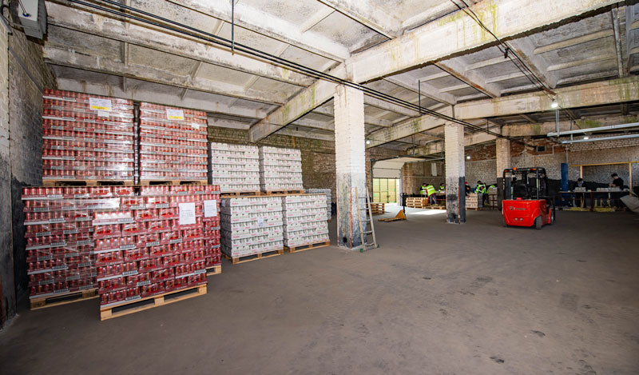
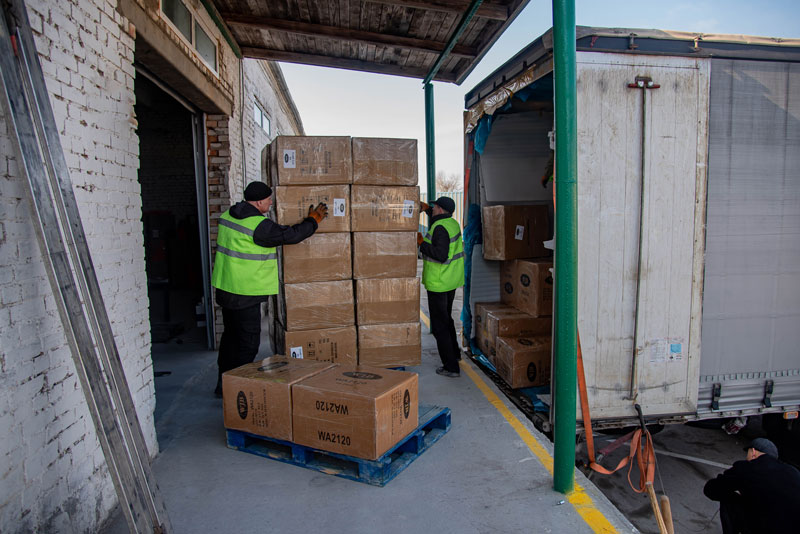

Склад временного хранения (СВХ)
Склад временного хранения (СВХ) — это специально оборудованный крытый комплекс и прилегающая открытая площадка зоны таможенного контроля (ЗТК), где импортные и транзитные грузы находятся под таможенным надзором с момента прибытия до выпуска в свободное обращение без уплаты пошлин и налогов на период хранения.
Наш терминал включён в реестр владельцев СВХ Государственного таможенного комитета Республики Беларусь и спроектирован так, чтобы принимать как стандартные еврофуры, так и негабаритную технику или железнодорожные вагоны.
Грузовые операции: перевалка и перецепка
Оперативная перецепка полуприцепов и перегрузка товаров из иностранных транспортных средств в автомобили резидентов ЕАЭС с полным документальным сопровождением.
Временное хранение под таможенным контролем
Безопасное размещение иностранных товаров на срок до 4 месяцев на время подготовки разрешительных документов, сертификации ТР ТС или ожидания оплаты пошлин.
Взвешивание, досмотр и отбор проб
Поэлементное и паллетное взвешивание на поверенном весовом оборудовании, вскрытие грузовых мест для таможенного досмотра, фотофиксация и отбор образцов для лабораторий.
Маркировка на СВХ до подачи ДТ
Нанесение акцизных марок, унифицированных контрольных знаков (УКЗ) и кодов DataMatrix непосредственно на территории СВХ до выпуска товара в свободное обращение.
Экономия времени на таможне:Пункт таможенного оформления (ПТО) и рабочие места наших декларантов находятся в одном здании со складом СВХ. Вам не нужно перевозить образцы или документы между разными концами города — любая процедура согласовывается на месте за считанные минуты.

Склад общего хранения (СОХ / Ответственное хранение)
После завершения таможенной очистки (выпуска по процедуре ИМ40) груз не обязательно сразу вывозить с терминала. Вы можете перевести партию на наш склад общего (ответственного) хранения — СОХ буквально за несколько минут без расходов на промежуточную транспортировку.
Также мы принимаем на ответственное хранение товары белорусских производителей, дистрибьюторов и торговых сетей, которым требуется надежный распределительный центр с прозрачной тарификацией за фактический объём паллето-мест.
- Стеллажное и напольное хранение: адаптируем конфигурацию мест под стандартные паллеты (EUR / FIN), биг-бэги, бочки, пивные кеги и крупногабаритные ящики.
- Кросс-докинг и консолидация партий: приём грузов от нескольких поставщиков, быстрая пересортировка и отправка сборных машин в регионы Беларуси и РФ без длительного хранения.
- Компьютеризированный WMS-учёт: контроль сроков годности (FIFO / FEFO), партионный учёт, инвентаризация по запросу клиента и предоставление детальных отчётов о движении остатков.
- Предпродажная подготовка (Копакинг): паллетирование стрейч-плёнкой, переупаковка повреждённой тары, стикеровка русскоязычными этикетками и формирование промо-наборов.
- Механизированная и ручная погрузка/выгрузка: работаем вилочными погрузчиками и гидравлическими тележками, а также выполняем бережную ручную выгрузку навальных грузов из контейнеров и вагонов.

В чём разница между СВХ и СОХ: наглядное сравнение
Чтобы вам было проще спланировать логистическую цепочку, мы собрали ключевые отличия двух режимов хранения в единую таблицу:
| Параметр | Склад временного хранения (СВХ) | Склад общего хранения (СОХ) |
|---|---|---|
| Статус груза | Иностранные товары под таможенным контролем (до выпуска ДТ) | Растаможенные товары ЕАЭС и продукция внутреннего рынка |
| Уплата пошлин и НДС | Отсрочена на время нахождения товара на складе | Таможенные платежи уже уплачены (товар в свободном обращении) |
| Срок хранения | До 4 месяцев (регламентируется ТК ЕАЭС) | Не ограничен (от 1 суток до долгосрочного договора) |
| Доступные операции | Перевалка, перецепка, взвешивание, досмотр, маркировка УКЗ/DataMatrix | Комплектация заказов, дробление партий, переупаковка, дистрибуция |

Принимаете грузы по железной дороге?
Наличие собственного железнодорожного тупика внутри зоны таможенного контроля позволяет подавать вагоны и контейнеры напрямую к рампе СВХ и СОХ. Вы экономите на вывозе контейнеров автотранспортом со станции и избегаете сверхнормативного простоя подвижного состава.
Просчитать стоимость